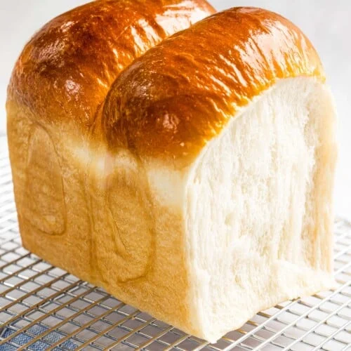

Milk Bread Recipe

Milk bread is an incredibly soft, fluffy, light white bread made with milk that's perfect for toast, sandwiches, or simple enjoying by itself. It goes by many names and is also known as Japanese milk bread, shokupan, Korean milk bread (우유식빵), Chinese milk bread, or Hokkaido milk bread. Japanese milk bread is also called 'shokupan' in Japan, which is translates to 'eating bread' because it can be eaten every day as a simple, white bread. Hokkaido milk bread is made from milk from Hokkaido, which is known for their high quality milk and dairy products.
- Flour
- Milk
- Sugar
- Butter
- Sea Salt
- Yeast
- Dough Enhancer
- Add all ingredients to your stand mixer bowl, mix on low until there's no more dry flour, then add butter and beat on high speed. Dough is ready when it forms into a ball and the surface is smooth and glosst. 10-30 minutes.
- Formt he dough into a smooth round ball and place into a see-throuhg proofing container that's beenc oated with oil. Proof until double in size.
- On well floured surface, divide the douhg into 6 even pieces and roll each into a ball; loosely cover and let rest for 15 minutes.
- Roll each ball into an oval shape. Flip it over so the crust is on the bottom and do a letter fold. Roll it up to forma spiral then pinch the seams closed. Pinch 3 spirals into a loaf pan, repeat for other pieces.
- Proof until it's 1cm from rim of loaf pan. Preheat oven to 356.
- Bake at 356 for 25 minutes or until golden brown crust.